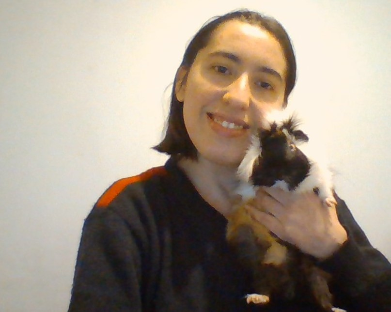

Curriculum Vitae

Datos Personales
- Nombre: María Jesús Cárdenas
- Lugar de nacimiento: Santiago, Chile
- Fecha de Nacimiento:05/05/1992
Formación
Estudió Técnico de Recursos Humanos en Instituto Profesional Los Leones. Actualmente se encuentra estudiando Desarrollo Web Front End en Academia Desafio Latam.
Habilidades
- CSS
- HTML
- Javascript
- React
Perfil Laboral
Portafolio